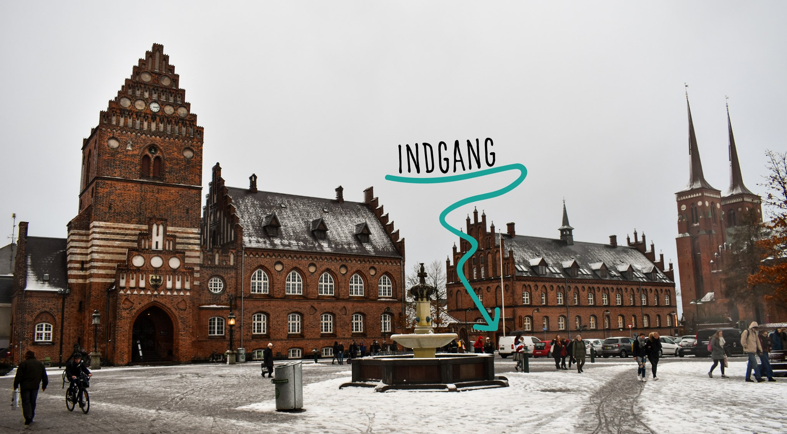

Om Byens Hus
Byens hus er sat i verden som et kommunalt demokratihus. Her kan du låne lokaler, møde andre, fordybe dig, blive inspireret og bygge løsninger. Du er en vigtig del af demokratiet. Tak fordi du deltager lokalt
Hvad Er Byens Hus?
Dit moderne medborgerhus
Som medborger kan du låne lokaler i Byens hus til almennyttige formål og afprøvning af nye ideer. Du kan selvfølgelig også deltage i aktiviteter, som dine med-borgere har planlagt. Har du et kommercielt formål eller bor udenfor Roskilde Kommune, skal du betale lokaleleje. Her er både plads til planlagte og tilfældige møder mellem mennesker: Større borgermøder, midlertidige udstillinger, intime netværksmøder, forsøg med nye initiativer og klassisk foreningsarbejde.
Et godt sted at starte og et trygt sted at teste
De fleste lokaler giver god plads til fortolkning, og du kan derfor i vid udstrækning bruge dem som du vil. Så længe du også påtager dig et medansvar. Du nemt låne ét eller flere lokaler til møder, netværk eller arrangementer. Det er gratis, hvis formålet ikke er kommercielt. Og du kan ikke booke lokaler til arrangementer af privat karakter.
Bygningerne i Byens hus
Byens ”hus” er faktisk to huse lige midt på Stændertorvet i Roskildes historiske bymidte. Det er både den gamle rådhusbygning og den gamle hospitalsbygning. Sammenlagt ca. 3.000 m2. De mange m2 fordeler sig på en række vidt forskellige lokaler. Det mindste er Mellemrummet på ca. 12 m2, hvor der kun er et bord og 6 stole. Det største er Den Gamle Byrådssal med 135 år gammelt bevaringsværdigt interiør.
Læs om lokalerne i Byens hus
Udviklingen af Byens hus Roskilde
Den politiske vision
Ideen om et Byens hus i Roskilde startede med Byrådets beslutning om, at udlåne den tidligere byrådssal til kulturelle, almennyttige og foreningsformål. Det var den 26. juni 2013. Siden har der været en grundig proces med en stor grad af borgerinddragelse. Resultatet blev en vision for Byens hus (både det tidligere Rådhus og det tidligere Duebrødre Hospital), der blev vedtaget politisk den 22. oktober 2014. Visionen beskriver at Byens hus skal være:
Et permanent folkemøde
En forpost for alle aktører
En katalysator for byliv
Et sted for studerende
Byens hus kernefortælling
Byens hus er et godt sted at starte & et trygt sted at teste. Et kommunalt demokratihus med lokaler til initiativer og almennyttige formål. Et sted for forsamlinger og samtaler, om små og store spørgsmål.
Principperne i Byens hus er
For Alle
Bare Spørg
Fælles ansvar